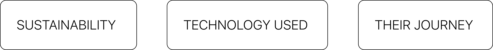
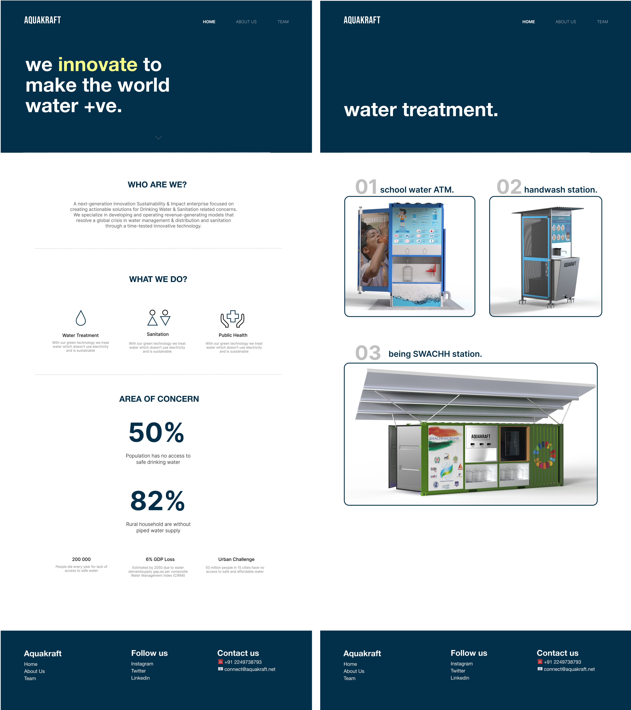
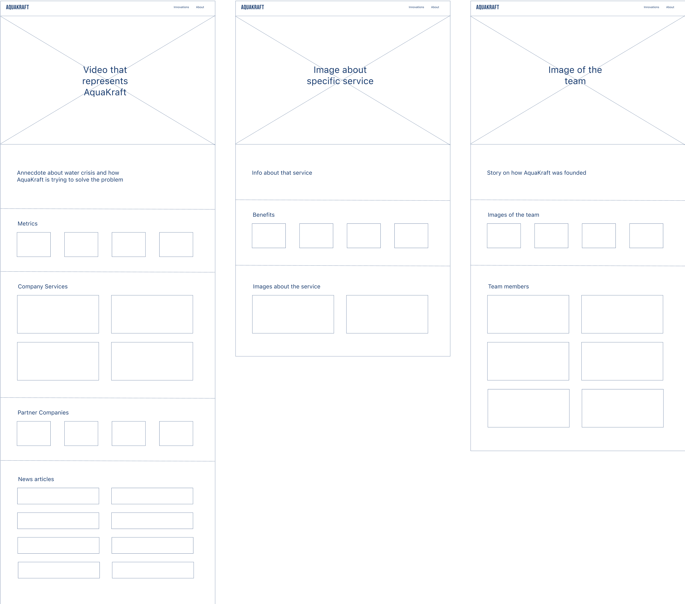
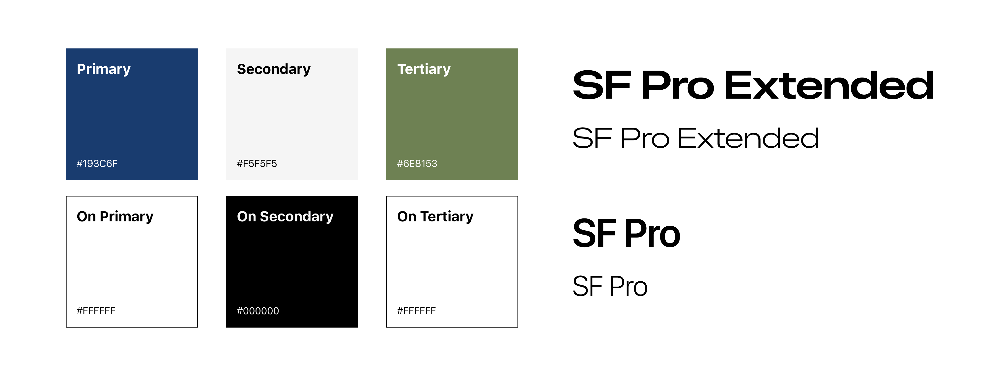

Promoting water positivity with AquaKraft: Enhanced storytelling about sustainability, leading to a 25% increase in website traffic..
Impact:
EMPOWERED MAZDA OWNERS WITH DECISION-MAKING
ELEVATED BRAND PERCEPTION AND LOYALTY
STREAMLINED SERVICE BOOKING AND PAYYMENTS

Team:
AQUAKRAFT
My Role:
UI DESIGN
UX DESIGN
VIDEO POST PRODUCTION
Duration:
4 WEEKS
Who is AquaKraft?
It is a water sustainability and impact company who are
focussed on creating innovative and energy-efficient solutions for drinking
water and sanitation. They believe in transforming communities by turning barren
lands green and bringing water back to dry taps. They are a part of UN Global
Compact India and aim to reach the UN Sustainable Development Goal of Clean
Water and Sanitation in india before 2030.
What did they want?
They wanted to revamp their existing website, which
lacked an enticing story for potential customers and investors. Apart from
the website, they also wanted me to create a corporate video, a letter head
for their business documents and visiting card templates. Their goal was to
create a visually compelling corporate website that truly highlighted their
achievements. Moreover, some key topics they wanted to highlight all over
the website were-

I started the process with a design review of the existing website


I conducted 5+ usability tests
I was confident in my assumptions but wanted to validate them with real feedback.
So, I reached out to two investors and existing corporate customers in India to gather their thoughts on
the website. Their feedback confirmed my suspicions—they struggled to understand AquaKraft's services and
mission from the current website.
One thing that caught my attention was a comment from a corporate customer. They mentioned that AquaKraft
wins awards and gets featured in articles and videos often, but this isn't clearly shown on the website.
This insight underscores the importance of showcasing such achievements to increase AquaKraft’s and the
website's credibility.
Visual design was my next step


Low-fidelity wireframes helped with information architecture
Low-fidelity wireframes were essential for organizing information
effectively in my design process. Starting with these simplified layouts allowed rapid
iteration and alignment with user needs and business goals early on, ensuring a solid
foundation for the interface design.

Colours + Fonts
For this project, I followed Google Material Design's color scheme
guidelines to create a cohesive and appealing look. I also chose SF Pro Extended as the
main font because my research showed that sans-serif fonts, which offer a modern and
professional feel, are popular on sustainability websites. This combination helped make
AquaKraft's site look both contemporary and credible.

Multiple iterations led to this final design: Landing page
This video strategically starts AquaKraft's story by showcasing its range of offerings:
sustainable solutions, energy-efficient water solutions, water footprint tracking, intelligent water systems
for monitoring usage, global partnerships, and commitment to a sustainable future for all. The home page featured
metrics, service cards, partner images, and recent articles—all aimed at enhancing credibility and building trust.

Innovation Page
This page essential talks about one of the innovations they have and sell that is the sewage
treatment and recycling plant. Just like this, there are two more, drinking water and sanitation & bio-toilets.
The page begins with detailed information about the technology and its workings, followed by the benefits of
using it, and concludes with photographs.

Constraints I had to consider
The team lacked images for their new services, which posed a significant challenge.
To address this, we used a combination of rendered images and AI-generated visuals.
I specifically leveraged Microsoft AI to create detailed images for the sewage water recycling treatment
technology.
Another constraint was the tight 4-week timeline, as the company aimed to launch the new
website before attending a UN conference. This required working in a fast-paced environment, making stakeholder
management crucial for clear communication with the C-level team, product manager, and marketing team. To ensure
efficient communication and gather insights, I scheduled weekly meetings and streamlined the process. Additionally,
I initiated a Slack channel for ongoing communication and quick responses when needed.
Other Design Assets

Summary
This project was an incredible experience, allowing me to learn about AquaKraft and
enhance their brand through storytelling and design. Even though I've completed the design, I remain in
constant contact with the developer to ensure my pixel-perfect designs are implemented correctly. To
further improve the site, I've sent survey links to potential customers and investors from the company's
contacts, aiming to gather at least 30 responses for feedback. Additionally, I am organizing a team of
photographers to capture real images of the implemented systems, making the website look more professional.
As a result of these efforts, user traffic has increased by 25%.